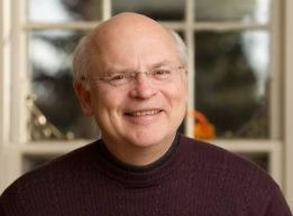

Arthur Zajonc, PhD, was professor of physics at Amherst College from 1978 to 2012, when he became president of the Mind & Life Institute. His research includes studies in electron-atom physics, parity violation in atoms, quantum optics, the experimental foundations of quantum physics, and the relationship between science, the humanities, and the contemplative traditions.
How did you start meditating?
I first began meditating in 1970 when I was about 21 and a student at the University of Michigan in Ann Arbor. It was a particularly difficult time in my academic studies. I was increasingly dissatisfied with the course of study that I had chosen. I was studying engineering and physics. In the middle of that crisis situation, I began a conversation with my physics professor Dr. Ernst Katz. That conversation led to a discussion of Rudolf Steiner’s work, which I didn’t know at all, but whose work he had been a long time a student of. We began to study Steiner’s book, ‹How to Know Higher Worlds› together. That was my first real introduction to Rudolf Steiner's ideas and I immediately took to these ideas.
I began to practice certain of the exercises. I tried to interest some of my student friends without success, although there was a lot of Asian spirituality going on around us in the university, religion, meditation, etc. Rudolf Steiner rang a distinctive note of truthfulness to me. I started my practice in earnest then and have kept meditating since.
I would say my motivation was born out of a certain critical situation in my life and the good fortune of meeting this particular professor who helped me in my physics studies and my life questions. My practice continues to this day, 45 years later. A second individual by the name of Alan Wallace came into my life when I was about 35. He had been a long time student of Dalai Lama, was an ordained monk for 15 years, and a scholar-practitioner of Buddhist meditation. About my own age, he had come as an older student to complete his undergraduate studies at Amherst College where I was teaching. We began to study physics but also spiritual themes together, especially meditation. He would read ‹Knowledge of the Higher Worlds›, and I would read something out of the Buddhist tradition and then we’d compare.
Both Ernst Katz and Alan Wallace were big influences on my meditation life. The one was the foundation for my meditation work and anthroposophy and the other was my introduction to the broader world of meditation.
Who was the first person you met that you knew was meditating?
The first time I met the idea of meditation was when I attended a lecture on Transcendental Meditation, popular back in 1970. It did not particularly interest me. It seemed more of a centring, calming practice rather than one with an orientation toward investigation or enquiry. I grew up in a Catholic family. I participated in religious instruction, no meditation, and religious services. The practice of meditation was unknown to me until I met Anthroposophy at the age of 20–21 and was a physics student at the University of Michigan. Ernst Katz was the first person I knew who was a long-time meditator in the anthroposophical tradition. He was very traditional and so did not share any details out of his own personal practice or experience. We would study ‹How to Know Higher Worlds› together and then talk about it if I had any questions. He was a very fine teacher from that standpoint, but he did not give meditation instruction himself.
By the time I met Alan Wallace, I knew quite a few people who were meditating, but mostly in Asian traditions with strong traditions of instruction and/or guided meditation. In fact, they felt that it was a particularly important part of their karma or destiny to find a teacher or teachers. So, on one hand, I had found a teacher in Katz, but one who, while supportive in many ways, did not provide instruction or guided meditation. I'd say the absence of any kind of personal instruction was initially difficult for me. I had questions, individual, personal practice questions, and I felt there were very few leaders within the anthroposophical community, who provided that kind of support. This was difficult for me, even crushing.
I once had the opportunity to have a conversation about meditation with Hagen Biesantz who was then a member of the Executive Council at the Goetheanum and visiting the United States. I made an appointment with him to get his advice about some of my practice methods. He provided some helpful advice concerning how to strengthen my imaginative capacities. It remained difficult, however, to meet someone who would provide advice on the practice itself within the anthroposophical tradition.
When I became General Secretary of the Anthroposophical Society in America in 1994, one of my early initiatives was to inaugurate an anthroposophic meditation workshop series with a few people who I knew were sound meditators with long experience and practice and modest in their claims. For several years we held many workshops throughout the United States. These workshops proved valuable and many people participated during the seven or so years that I was active doing that. My early longing to find a person with whom I could speak more openly about my practice lead to this initiative. That longing continued to live within me and has taken various forms.
The Association for Contemplative Mind in Higher Education (www.acmhe.org) is one such initiative that is outside the Anthroposophical Society proper. There are now some thousands of people who are professors in colleges and universities around the world, primarily in the US, who get together for different conferences and workshops to share with each other methods and means by which they use contemplative practice in their teaching and research at a myriad of academic institutions. I sometimes still teach workshops at those gatherings together with many others from all disciplines.
Within the anthroposophical community itself we now have the relatively new and important Goetheanum initiative known as Meditation Worldwide, an initiative I am happy to have helped with.
The aim of meditation and the appropriate ways to find support and instruction has been a long-standing theme for me. I feel deep gratitude for the support I received as a young student learning about Anthroposophy from Prof. Katz and also Prof. Alan Cottrell, but also regret not finding more people with whom to study meditation and grow in my practice during those years.
The Goetheanum conference that will take place in July 2017 is an example of the growing interest and openness to the work of meditation and Anthroposophy more generally. The conference will provide a way for many people to support and benefit each other in their meditation practice. I can understand the reluctance people have had to offer instruction in meditation. None of us are initiates; none of us are Masters, so to speak. Yet many have been working at meditation for some years and have gained valuable experience. I feel the sharing of those experiences is an important part of becoming a spiritual community when done in the right way, with modesty.
I think the mystery plays depict an example of a spiritual community of individuals. Profound friendships and even love for one another form the basis for a shared spiritual life, including life in the supersensible. The mystery plays are as much about spiritual friendship and communal experience as about particular spiritual teachings.
In the beginning of the interview, you mentioned Anthroposophy and Buddhism. Why did you choose Anthroposophy as the basis of your meditative life and not Buddhism?
I am a scientist, a physicist, and my natural inclination is to try and figure things out, to learn about whatever subject matter I am interested in at the time. This enquiring, researching mind is something I have had throughout my whole life. By contrast, when I would meet young Buddhists back in late 60s and early 70s, I wasn’t meeting people who had that research interest, that questioning, investigatory orientation. It wasn’t until much later, when I met such individuals as Alan Wallace and the Dalai Lama that I began to meet people outside of Anthroposophy who did have a spiritual research interest. I'd say that my initial attraction to Anthroposophy was not only the meditative work, but meditation work directed towards a spiritual science, and that fit in with my early inclinations towards science overall.
I felt and still feel it is important that Anthroposophy is not a belief system but a path of enquiry, one leading to the unfolding of capacities. Anthroposophy was very attractive to me, and an existentially important step for me. Anthroposophy provided an important line of meditation practice and enquiry.
Early on I threw myself into the study of anthroposophical literature as well as into my modest efforts in meditation. Some years later I came to know the more mature expression of Buddhist meditative practice in America and then in Asia. I have a deep respect for those traditions. But I think the connections that Steiner made between Christianity and the Western scientific and philosophical traditions are of enormous importance. Also, the practical applications of anthroposophy – Waldorf’s education, biodynamic farming and medicine — all felt very attractive and contemporary.
The practice of a Zen Master or the Theravāda Buddhists didn't really appeal to me, didn't have the Christian aspect, didn’t have the scientific orientation, and didn’t have practical applications. Anthroposophy had all of these things and reconciled science and spirituality. The Christian tradition, which I had rejected at a certain point, found a new life in me when I began to study Steiner’s writings on Christianity as mystical fact.
The contemporary character of Anthroposophy and its compassionate engagement with the world’s problems appeals to me. Steiner offers spiritual insights that are key to addressing those problems in ways that are systematic and profound. I have always been deeply impressed by the clarity and integrity of, for example, Waldorf’ education. My wife and I joined with others to start a Waldorf school and Biodynamic farm in Western Massachusetts. My engagement with Anthroposophy has been a beautiful unfolding journey not only in meditation, but also in some of these more applied areas.
Why do you meditate?
The reasons have changed over the years. My first attempts at meditation were attempts at stabilising my emotional, psychological life, but pretty quickly I could see that what Steiner was doing was promising to open a path to a domain of experience that would lead out of the experience we have with the sense world to a complementary domain of experience in the supersensible. And that's just what has held my interest and fascination for all these years.
There is a practice of humility and various practices of soul hygiene, as I call them, as well as practice with the mantric and visual content of anthroposophy. These practices surround and support the personal transformational growth that ultimately lead to a domain of human experience that has always felt to me to be missing in most of our education. And, at the same time, exactly this spiritual domain is very important for fulfillment of our personal and larger goals as human beings.
More recently, the theme and practice of spiritual friendship has become more important. In the beginning my spiritual striving seemed a relatively solitary enterprise. Over the years it became more and more socially important. So how does one come together in a spiritual community? One way is through study, which is the first step on the anthroposophical path. So, you can study together and, with the right attitude and orientation, learn from each other. But it felt to me that there can also be another step, more towards the work of imagination, inspiration, intuition – along that trajectory – that could also be done in community. Workshops and efforts to teach meditation and come together, practice together and to raise questions for each other and with each other, these became more important.
And then, sometimes, one finds a real partner, a real companion on the way. It may not be for one’s whole life, maybe just for a chapter, as with Alan Wallace, who wasn’t an anthroposophist, but was a long-time, very serious and earnest meditator. He and I would have wonderful conversations and we even taught together a couple of times. I would organize conferences, in which I would teach anthroposophic meditation, and he would teach a similar practice, but out of the Buddhist tradition. We worked in particular with the Buddhist kasiṇas or devices which are earth, water, air, fire, the four colours, light, and space. These are basically sense practices, which aren’t much taught within the Buddhist tradition today, but which are part of the standard canon of Buddhist practices.
The kasina practices reminded me a great deal of anthroposophy’s orientation towards sense practices or phenomenology, especially Steiner’s colour meditations and sense-based practices. In a number of conferences, Alan Wallace taught Buddhist kasiṇa practices and I would teach Steiner’s practices in this area. We also addressed important questions around themes of the nature of the ego within Buddhist and the anthroposophical traditions or notions of compassion, love as a way of knowing in both traditions. It was a wonderful collaboration; he was and remains a real partner.
And then there were other anthroposophical individuals, whom I also came to know and to care for and teach with. I think this has kept my interest in and dedication to meditation alive.
What is the uniqueness of anthroposophical meditation?
There are some types of practices that are essentially universal, whether one is working with a Sufi teacher, Buddhist teacher, Christian monastic, or with anthroposophical meditation. One has to ask, what then is unique about anthroposophic meditation? Also what are the particulars of one's own karmic destiny?
Anthroposophic meditation certainly has its particular specialities, special features, which I have already mentioned. These have to do with Christianity, its Christ centred or oriented practices; these practices are also directed toward a scientific orientation as well, which many of the other practice traditions de-emphasise or don’t have at all. Anthroposophic meditation is specifically oriented towards modern consciousness, recognising the importance of the individual and the unique character of each person. The relationship to a teacher in anthroposophy is therefore more independent. One can still have teachers. Steiner speaks about that in ‹How to Know Higher Worlds›, for example.
The modern teacher does not induce development from the outside, but provides guidance in the same way a mathematics teacher might provide guidance. There are many aspects to contemplative practice that are individual, so we also have to be, in some sense, careful not to over generalise. One meets people who are long-time practitioners within the Buddhist community and the feeling one has is that they are at home; they have found a spiritual home for themselves. This is where they belong. Or people who are doing Centring Prayer out of the Christian faith tradition and one realises that they've given their whole life to this and it's something quite beautiful. They have a particular destiny also.
We can understand this from our anthroposophical world-view. There is not a rule or a golden standard by which everybody must somehow conduct their lives; there is no one single path. Every individual needs to find his or her own path. That’s true not only between anthroposophy and Buddhism or Hinduism, or Sufism, or Christian meditation practice, but even within anthroposophy itself.
We have to guard against the tendency to inflate our practice so it becomes ‹The Practice›. What works for me as a meditative practice may not work for someone else. Rudolf Steiner spoke of ‹The Philosophy of Freedom› as a way of practice; he has described meditative pathways to the Christ; he has written ‹How to Know Higher Worlds›; he has lectured on a path especially suited for scientists. I think it might be best to imagine that there are as many practice orientations as there are individuals.
There are some common lines one can point to when considering the many different anthroposophical orientations to practice. I think the task of teaching anthroposophic meditation is not only to teach the most common practices, but also to enter into the destiny of other people and understand that their particular paths are likely to be quite different from one’s own.
Perhaps one can give other striving meditators some assistance for their particular practice, or suggest that they might benefit by working with someone else. In the Buddhist tradition, it is often the case that a student will come to a meditation teacher and that teacher will work with the students for a brief while and then recognise that they are not really the ideal teacher for this particular student. Their task as teacher is to put the student in touch with somebody else. I think we anthroposophists should be likewise generous and recognise that our own practice may be suited for some, but that there are still others who are undertaking a careful and rigorous practice with a somewhat different orientation.
We need to be broadminded and appreciate meditation practice wherever it is undertaken with modesty and earnestness and embodies moral standards that one applies to a good life. I personally think it best to pursue a middle way between a single standard, which one can trust and where everyone does the same thing, (which then may become dogmatic) and one where there is too little discernment (with the danger of an ‹anything goes› attitude).
What do you consider to be the core of anthroposophical meditation?
Well, you have my book ‹Meditation as Contemplative Inquiry: When Knowing Becomes Love.› For me, I envision an arc of practice. Before meditating I usually start with a bit of study first and then move to a practice of reverence, for example, a prayer. And then I may move to the domain of soul hygiene, using one or more of the 6 subsidiary exercises (control of thinking, control of will, control of feeling…). From there I begin meditation proper. This may be a word meditation or sense meditation or other suitable material. Through such exercises one enters the sphere of Imagination. As I describe in my book, one can bring a rhythm to one’s attention, moving between focused concentration and open awareness, back and forth between these two. I think of this as breathing in the light of attention. This exercise is crucial to me.
The arc of meditation is only complete when one brings back the fruits of one’s practice to the earth. Spiritual practice is not something that is meant to eject us out of the earth’s domain, but rather is something that is meant to help us better serve the world. The archetypal and foundational ethic is one of selflessness. Through soul hygiene exercises we develop a fit instrument, one needed for the work of meditation proper and the cultivation of the capacities of imagination, inspiration and intuition.
The subtitle of my book, ‹When Knowing Becomes Love›, points to something that is also deeply important to me. We tend to see love as a desire or emotion disconnected from knowing. However, when we work with the above rhythm of attention described before, we ultimately come to what Steiner calls Intuition. By the time meditative cognition comes to intuition, one comes to a point where we know through becoming the other. Intuition can only take place when there is profound selflessness, when the ego in its normal everyday small dimensions is given up. Love for the other, is then selfless and becomes fully manifest. One can become, in some sense, the other, can know the other from the inside. In this moment, ‹Knowing becomes Love›.
The duality of life, subject-object, the inside and the outside, the self and the other, all these dualisms are overcome and non-duality of consciousness is possible. Philosophers speak about the mind-body problem, the dualism of consciousness and sensory reality, and seek to resolve this problem philosophically. I think the real solution to the problem is achieved when we ourselves become the solution. We become selfless and loving. In that case, there is no elaborate duality, there is a simple unity, which is simultaneously cognitive. A new type of cognition, Intuition, is born out of that unity.
What’s important is not only what one has learned as content in meditation, it’s what one has developed in oneself as new capacities for knowing that is most significant. One can bring these capacities into all of life, leading to new insights and innovations whether in education, agriculture, medicine, or in whatever field one happens to be in, whether it’s in physics or chemistry, mathematics or social work, or economics. All disciplines can benefit.
Where do you see your own focus within anthroposophical meditation?
It has changed and continues to change with time. Right now I am giving an increasing focus to mortality, preparing for death and the stages of dying. How does one prepare for those stages? We have incredible material from Steiner about this process, which can become the basis for meditative practice. Death is part of the arc of life. When one is young and healthy and has one’s whole life ahead of one, one thinks less about the end of life.
I am now 67 and have a serious illness (As you may know, I have Parkinson’s). There is a certain ripeness to my life and mortality is more present. One learns to look at the threshold of sleep and the threshold in meditation as a preparation for the threshold of death. This practice becomes more relevant when one gets older. So, this is one of my current focuses.
A second focus for me now is the social dimension of meditation. By social I do not necessarily mean sitting down with somebody and meditating together. When one is older one appreciates more than ever those people that one has as friends and loved ones and also those people from the past who have given something of themselves for your benefit and for your care. They may be dead, or they may be alive, it doesn’t matter. Gratitude becomes part of one’s practice and preparation for death. Frequently, I will, at the beginning of my practice, bring those I wish to thank into the room, so to speak, and do the practice in their company.
Right now I am writing a book on materialism, and I am doing so as a scientist and physicist. Some of my meditation times are taken up with questions arising out of that project. How does one understand the world around us in relation to the eternal, the ideal, and a pure archetypal reality? Is the physical world part of the supersensible? Where does the supersensible show up in conventional science? How do I reach into this domain of spirit as a physicist? Again and again, I bring such questions into my practice. These are the new focuses I have.
You mentioned supersensible perception. There are some people who are quite active at the Goetheanum working with supersensible perception. It was a taboo topic before. Can you elaborate on that, please?
If one practices meditation, at some point one will have a supersensible experience of some kind. For some people, such experiences become quite extensive and form a large part of their life, an important part of their meditative life. Interestingly, within the Buddhist tradition such capacities for supersensible experience are called siddhis, or psychic powers. Those powers are recognised but are treated as distractions. The goal in the Buddhist tradition is enlightenment. Enlightenment is a state of non-attachment. That means that one does not attach to the things within the temporal world, this world, including one’s own ego, egotism wealth, domination, and such. The Buddhists maintain that one’s attachment to such things must be dissolved
Caution is given in all Buddhist meditation traditions to take care that the psychic experiences one has in meditation don’t become a source of distraction on the way to enlightenment. These are phenomena not of the sense world, but of the soul world. One can see in Steiner's mystery plays and elsewhere, that there are adversarial beings who sow confusion and attachment, who work not only on our physical life, but also especially on our soul-spiritual life.
This is another area where I think community is very important. We need to find ways to ‹normalize› spiritual experiences. By that I mean to treat them as normal phenomena as opposed to something that is so exceptional that we are in danger of having a wrong attitude towards them in others or ourselves. Otherwise we may think we are somehow special. Or if we meet somebody who has a special psychic gift, we may defer our own good judgement to their judgement and seek out their advice as if it were superior to our own judgement, which may be the case occasionally or may well not be the case.
Supersensible experience is, in some sense, information, but to understand that information is often very difficult, and to use that spiritual information with good judgment is even harder. For example, suppose one has a spiritual insight concerning a person. What does one not say to that person, especially to one seeking advice?
I sometimes marvel how much Steiner could perceive when meeting a person. The individual comes in, sits down and there's a whole world that is open to Steiner over and above what is given to the physical senses. And yet, what does Steiner choose to say? A few words perhaps, and sound advice. Good judgement is something quite distinct from spiritual experience. Spiritual experiences are just more experiences, offering more knowledge, perhaps. But people with bad judgement on the level of the physical sense world, they will have bad judgement with regards to the supersensible as well.
I think one other important thing is that when one enters into community, into conversation, the practice of discernment is paramount. One must learn how to work with and handle the spiritual experiences that are given not only to us but also to others. Consider the opening of the first mystery play by Rudolf Steiner. Theodora enters in the opening scene and she has a spiritual experience in public, an experience of the etheric Christ. It is a spontaneous experience that she describes in the same moment she has it. Maria, the protagonist, says something to the effect that while we don’t really understand Theodora fully, she is welcome in this place. Theodora may be an outcast elsewhere, but she is welcome here. This is said even without a full understanding of Theodora’s particular destiny. Later she and scientist Strader become life partners, and there is a harmony to that. This man, so different from Theodora, balances and compliments her and they become partners.
We have a full range of possibilities with supersensible experiences and their use. We can act responsibly, individually and communally. We can also abuse those experiences, just as we can misuse and/or abuse normal sensory understanding and knowledge. It is important to have a community with a right orientation towards spiritual experiences. This is a community where one does not give up one’s own sound judgment to somebody else, and where one does not inflate our own experiences beyond what is merited, then one can have a healthy orientation towards supersensible experiences. We can learn from one another, and find appropriate ways of applying our experiences and knowledge to the world.
The language we use in speaking about spiritual experiences is important whether with one another privately or in public. At this point in time we are engaged in an important but young conversation; we are still learning and finding our way. I think it is good that the people you mention who are working with supersensible perception in relation to the Goetheanum are not scorned or made outcasts. They may happen to have a particular gift with which they have worked for many years. They also should have a community with whom they can form a healthy partnership. This is a good thing. But we are still young in our exploration of both true community and spiritual experience.
It’s also important for people who have little in the way of supersensible experiences to be patient. It’s sometimes the case that one has a single dramatic experience early on and then a long period during which one is working one’s way back to that experience. It's a very non-linear path, one that has many detours, many places where one can get lost. One needs to practice patience and even have a certain resignation. The karma one has, the particular path one has taken, is the right one. It may be slow; that is okay.
Do we need one another? What role do people who practice anthroposophical meditation play to each other? Is there an exchange possible and sharing experiences? What are opportunities and challenges? How is the situation now for you?
We talked a bit about this already. I gave you a few examples where both anthroposophical and non-anthroposophical friends who have a strongmeditation practice have been very important for me. There are two main situations to think about in this regard.
The first is with people who are one’s peers, people who have already undertaken quite a journey along the path. One sits down, is able to open up to the other and share practices and meditation experiences in a way that feels appropriate, and is held by the other in an honouring and appropriate way. It is not about seeing who knows more or has grander experiences or any of that nonsense. Rather, space is created where the genuine striving of each person can find voice, including questions and concerns that can be shared with someone who is a companion on the journey. Such a spiritual friend and companion is someone precious and one who can be a great help.
The other situation is one where a significant difference exists. It might be that one is working with someone just coming into meditation work, or maybe with someone who has no practice but who is a companion, a friend, or even a life partner. One can be an experienced meditator and at the same time one’s spouse is not. That doesn’t mean that there can’t be something profoundly important that is shared. The two may share the raising of children, may share other life’s struggles together, and they may recognise that their spiritual journeys are different and that meditation will have a different importance for each one of them. Nevertheless, they share key life tasks and spiritual striving with one another.
In such a situation one has a special challenge for two spiritually striving individuals. One recognises that there is, in some sense, a split allegiance. One has a life with a beloved person, one whom one recognises as a destiny partner, and at the same time, there is an inner commitment to a particular spiritual life, which may involve a study or spiritual practice inconvenient (and more) to the person with whom one wishes to share one’s life.
In such instances, one has to be morally sensitive both to the human context which one is in and the spiritual longings that one has and seeks to unfold. People can often feel completely torn apart by the tension. Yet one doesn't just pick up and leave spouse and family for the spiritual life. The children and marriage partner are also a part of the spiritual journey. It might be a Luciferic inflation to just turn one’s back on the family and head off in search of spiritual ideals and the ideal community one has in mind. The trials and teachings one needs are usually to be found in life as it presents itself.
So, when spiritual friendships between peers exist, people can really move in the same direction, and they can help and support each other. That’s a special gift. But one has to also recognise that life unfolds in complicated ways. The job one has, the life-partner one chooses, the child one raises, they all make rightful demands on one’s life. We can carry them in a meditative way, and can live with those realities in ways that engage and strengthen our inner life to meet those challenges.
If one doesn’t welcome diversity in one’s karma, if one thinks that one needs to surround oneself entirely by people who are like us, then one may get stuck in a spiritual commune, not a community. A kind of insulation from the world of today with its challenges and sorrows results. Commune members may often have a gilded picture, an illusion of what they are looking for.
I think more and more we are called to be in life, which means that the spiritual practices we take up, are taken up in the midst of conflict, in the midst of difficulties, in the midst of struggle. The benefit of the practice is that personally we will shine into those situations of conflict in the world. So, one shouldn’t only look for beloved peers and companions, one should also recognise that destiny has put us into situations which are sometimes very difficult, and that that is okay.
Struggle is sometimes required; like mortality, it is part of life. We will all die. We are all going to struggle. We are all going to be put into challenging situations and many times that’s part of the journey, part of the spiritual journey, that each of us is called to be on. We can have confidence that that is right. Of course one has to judge; sometimes it’s important to leave, to change one’s life’s circumstances. But if one judges and says that this is where I belong, as difficult as it is, then one should also have the confidence that the spiritual world is not pernicious, it doesn’t put one in situations just to punish one. Such an attitude actually can lead to the spiritual resources one needs to get through whatever needs to be gotten through and to transform that situation into something that is going to be beneficial in the long run.
It may be invisible in the moment. Maybe one won’t see it for years but at some point that person who is one’s nemesis, and with whom one is trying to maintain charitable and good intentions, one day he or she will become a good friend. One never knows. I know it has happened on more than one occasion in my life, but one has to be patient. Meditation can, in this regard, be a huge source of inner support by which one learns steadfastness and faithfulness.
Even in the dark times one can practice. One can find a certain place of peace and bring that peace into life and those darker times.
Where are we now as an anthroposophic community and what future wishes do you have?
I think it is an exciting time for anthroposophic meditative work. I am very much encouraged by the way this has gradually been taken up by the Goetheanum, and by others outside the Goetheanum. It offers a way that many people who have had a solitary meditation practice experience, or have been working with a few others, can come together as a larger anthroposophical community and share their struggles, their ideas, their hopes, and their experiences. We can learn from each other and with each other. I think it’s an exciting time.
As for the future, I think we have two sources for the unfolding of the future. One is what we will into existence, what it is we intend. The other is what the world brings to us. I think it is especially this latter case that could prove critical. I feel we are in a time, in the early 21st century, when we will meet special challenges both for us as individuals and as a civilization.
The next century could be a century of great challenge. What are the capacities we are going to need for the next century? We must be constantly awake to what is coming from the future by, for example, looking at those who are incarnating, specifically to look at those who are in their teens and 20s. These are the people who are going to be carrying the work forward over the next decades. How can we support and nurture them. What is it that they need? It is not a question of what we want but what they need, because they are going to be the ones who will meet some of the most important questions and concerns of our time. Rather than trying to predict and speak about what we might want, I think we must try to practice spirit envisioning, to look at the stream of time that’s coming from the future into the present. I think we are going to have our hands full. How do we stay awake and prepare for that future?
Do you have any advice for someone who would like to begin to meditate?
I think it is important to study meditation. By that I mean to study writings about meditation. I would start there and then pick a simple practice, not something too demanding. There is a research group at Brown University that has taken up research on spiritual practices that lead to psychotic or traumatic breakdowns. Most of the interviews were with meditators from the Buddhist and Asian traditions who have had breakdowns.
Certain intensive practices can be destabilising. What it is we are trying to do through meditation? To some extent we are destabilising the normal balance of our life as an incarnated soul. If this happens too quickly using extreme methods, it can lead to psychotic episodes. The Brown University researcher interviewed some 50 or 60 people who had such episodes. She presented her research results to the Dalai Lama and the Mind & Life Institute. She asked the Dalai Lama what he would recommend to prevent these problems. The Dali Lama replied: STUDY. He said that these people need to really study before starting the practice. If they jump too deeply into the middle of the practice without proper preparation, and especially if it is an extreme form of practice, the results can be traumatic.
The person just starting meditation really benefits from studying with a mentor, the way I did with Dr. Katz. I sat down and read ‹How to Know of Higher Worlds›; I studied the whole thing. Of course, one can work with a few of the practices in order to see what they are, but then one has the next decades of one’s life to continue the practice. However, I feel it is important to secure a firm foundation through study.
I would say that is my advice. You may do meditation on your own, but if you are fortunate, you may find a person who has read and studied the material a few times themselves and has practiced the exercises themselves. In such a case one has a teacher. Such a teacher will not necessarily be a master, but that is not essential.
Then one begins one’s own initial practice. Which practices should one start with? There are a number of entry points. So much depends on the person and his or her destiny. Is this a philosophical mind? Should he or she be reading ‹The Philosophy of Freedom› as their first spiritual practice? Maybe, maybe not. For a person who is more open to devotion, perhaps prayer and moving towards meditative prayer, and then working the prayer further into meditation proper, is this the way for them?
Is the person’s soul in a bit of chaos? They may need the 6 accessory exercises as the first place to start in order to become more settled. These exercises are beneficial to all. Is this a person whose awareness remains in the body, a eurythmist or physically active person, a person who has to do everything physically first? In such cases it may be that movement exercises, body-based contemplative exercises, are actually the door for them.
In other words, I would not pick one place as the starting point for everyone. I would try to understand something of who the person is. Study is always good for everyone. If then one is to take a step from study to practice itself it is often quite individual. At the outset some kind of sound moral orientation, selflessness, has to be emphasized. So for me, ethics, spiritual ethics is a crucial foundation. Study on the one side, but together with study is the practice of reverence and the crucial ethic of altruism. Steiner speaks about how reverence must be written in gold letters above the entry into meditation. We need to have practiced devotion, reverence, honesty, and humility. This goes a long way to safeguard us along our spiritual journey.
Sometimes people say that my book is not dark enough, that I don’t talk about tempters, for example. I can appreciate that concern, but on the other hand I think there are safeguards that we can build into the practice. We do this especially by cultivating a pervasive and enduring tone of ethical and moral orientation to meditation. One should practice humility and reverence right in the beginning and always at the end of the practice session: gratitude and selflessness. By doing so I believe one is safeguarded with regards to these adversary forces. To a beginner, I would say, do whatever you can by way of cultivating such moral capacities as a foundation for your meditative life.